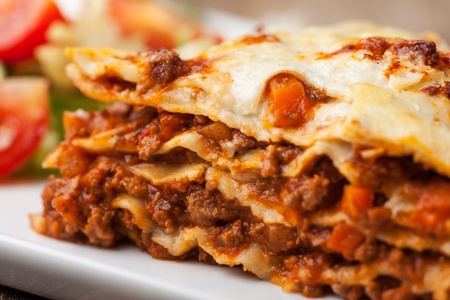

Lasagna Recipe

Description
Lasagna is a dish made from pasta, meat, cheese and tomatoe sauce.
Ingredients
- 10 ounces of lasagna noodles
- 1 1/2 pounds of ground beef
- 3 cups cottage cheese
- 2 eggs
- 1 teaspoon of garlic powder
- 2 tablespoons of dried parsley
- salt and pepper to taste
- 1 (6 ounce) can of tomato paste
- 2 (6.5 ounce) cans of tomato sauce
Steps
- Preheat oven to 375 degrees F(190 degrees C).
- Bring a large pot of lightly salted water to a boil. Add lasagna noodles and cook for 8 to 10 minutes or until al dente; drain.
- In a skillet, brown ground beef. Using a fork, mix cottage cheese, egg, garlic powder, parsley, salt and pepper. In a seperate bowl combine tomato paste and tomato sauce.
- In a 9x13 inch baking pan, layer noodles, ground beef, tomato sauce mixture and cottage cheese mixture. Two layers of each will fit. Cover with tin foil and bake for 30 minutes. Remove tin foil the last 8 minutes of baking.